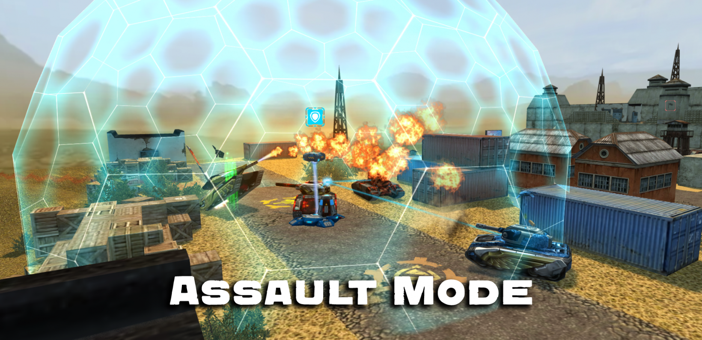
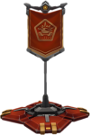
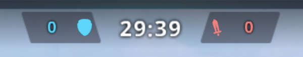

概括
突袭是一种融合风格的格式。该模式与互夺军旗和橄榄球非常相似。
团队分为两队，每队负责不同的角色。
战斗受占领点数（150常规战斗中的团队积分）或时间（常规战斗中为 15 分钟）影响。
描述
突袭模式不同于游戏中的任何其他模式 - 它结合了夺旗的战略元素和橄榄球或围城的防守设置。
玩家分为两支队伍，一支从基地拿下一面旗帜，并试图通过驾驶或击中地图上特定的“基地”来夺取旗帜。
防守方的目标是阻止进攻方成功送旗。防守方因击毁敌方坦克而获得积分（类似于 团队对战）。
成功夺取旗帜需要团队合作、技巧和时机。
玩家应该尝试一起进攻，使用他们的过速装置，并尝试在完美的时刻进入
比如当一名重型防守队员死亡或整个防守队的健康状况不佳时。
防御者应该尝试通过布设地雷、待在一起并使用重型底盘阻挡通往基地的通道来强化他们的基地。
这种模式的总体目标使其非常基于策略，需要付出很多努力才能获胜
而这不能仅仅来自于物资和个人技能。
齐心协力，照顾好队友，夺取胜利之路！
图标和指示器

蓝色旗帜
当玩家位于进攻方，所看到的旗帜颜色为蓝色

红色旗帜
当玩家位于防守方，所看到的旗帜颜色为红色
蓝色基地
当玩家位于防守方，所看到的基地颜色为蓝色
红色基地
当玩家位于进攻方，所看到的基地颜色为红色
我方旗帜基地
当玩家位于进攻方，所看到的基地旗帜指示

突袭计分器
计分器显示当前分数。剑表示进攻方，显示进攻方已成功完成多少次突袭（每次突袭可获得 6 分)
而盾表示防守方，显示防守方已完成多少次击杀（1 次击杀可获得 1 分）。
有趣的事实
自毁后，玩家将失去 10 分的战斗分数，并以他们的名义失去 1 次击杀
如果玩家成功击杀敌人，他们将获得 40 点经验值和 15 点战斗分数
如果玩家协助消灭敌人，他们将获得 5 点战斗分数以及 20 点经验值
使用磁力炮治疗玩家最多可获得 12 点战斗力和 20 经验值
每交付一面旗帜，进攻方将获得 6 分
旗帜只能由进攻方的队员拿走。
交付旗帜奖励 40 经验和 50 战斗分数
如果玩家设法拿下旗帜但被摧毁，旗帜会自动返回旗杆
持有旗帜的玩家在旗帜返回基地之前不能再次拿起它
防守方每完成一次击杀，都将获得 1 分